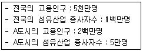
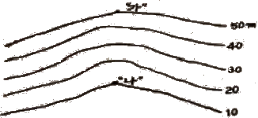
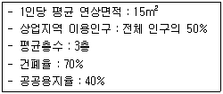
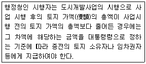
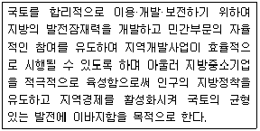
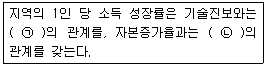
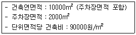
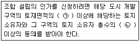
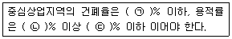

도시계획기사 (2018-04-28 기출문제)
1과목: 도시계획론
1. 보행자 교통안전에 대한 대책으로 교통의 흐름을 단순화하고 유도하는 사항이 아닌 것은?
- 일방통행
- 추월금지
- 도류로 표시
- 횡단보도 설치
(정답률: 72%)

2. 인구성장의 상한선을 두고 있지 않은 도시인구예측모형은?
- 지수성장모형
- 곰페르츠모형
- 로지스틱모형
- 수정된 지수성장모형
(정답률: 78%)
3. 중세시대 이슬람 사회의 특성을 나타내고 있는 도시와 국가의 연결이 틀린 것은?
- 라바트(Rabat)－모로코
- 바스라(Basra)－튀니지
- 푸스타트(Fustat)－이집트
- 코르도바(Cordoba)－스페인
(정답률: 70%)
4. 미래의 도시계획과 관련하여 새로운 계획패러다임의 방향으로 옳지 않은 것은?
- 지속가능한 도시개발로의 인식 전환
- 자원·에너지 절약형 도시개발로의 전환
- 시민참여의 확대와 계획 및 개발주체의 다양화
- 도시기능의 평면적·일률적 분리를 통한 토지이용관리
(정답률: 90%)
5. 다음과 같은 조건에서 A도시의 섬유산업에 대한 입지계수는?

- 0.5
- 0.8
- 1.25
- 1.50
(정답률: 80%)
6. 200만m2를 초과하는 다음의 지역 중 공동구 설치의 의무대상이 아닌 곳은?
- 개발촉진지구
- 도시개발구역
- 택지개발지구
- 경제자유구역
(정답률: 45%)
7. 도시기능별 입지조건에 대한 설명으로 옳지 않은 것은?
- 상업지역：기능의 활성화를 위하여 접근성이 좋아야 한다.
- 녹지지역：생활권과 유기적으로 공원을 연결하고 녹지축을 형성해야 한다.
- 주거지역：지역민이 가장 오랜 시간을 보내는 곳으로 안정성과 쾌적성이 좋아야 한다.
- 공업지역：향후 확장에 따른 환경오염 피해를 최소화하기 위하여 대상 부지가 좁아야 한다.
(정답률: 90%)
8. 뉴어바니즘(New Urbanism)에 대한 설명으로 옳지 않은 것은?
- 근린주구는 용도와 인구에 있어서 다양해야 한다.
- 커뮤니티 설계에 있어서 자동차뿐만 아니라 보행자와 대중교통도 중요하게 다루어져야 한다.
- 도시적 장소는 그 지역의 역사, 기후, 생태를 고려하되 기존의 건축관행은 지양되도록 설계되어야 한다.
- 도시와 타운은 어디서든지 접근이 가능하고, 물리적으로 규정된 공공공간과 커뮤니티 시설에 의해 형태를 갖추어야 한다.
(정답률: 81%)
9. 도시·주거환경정비 기본계획의 수립 기간으로 옳은 것은?
- 5년
- 10년
- 15년
- 20년
(정답률: 65%)
10. 프리드만이 학문적 전통에 따라 사상적 배경을 분류한 계획이론으로 옳지 않은 것은?
- 사회개혁(Social reform) 이론
- 사회맥락(Social context) 이론
- 사회학습(Social learning) 이론
- 사회동원(Social mobilization) 이론
(정답률: 56%)
11. U-City의 개념에 대한 설명으로 옳은 것은?
- 고밀 개발을 통한 직주근접을 목표로 하는 도시
- 물, 에너지, 자원 등이 효율적으로 이용되고 재활용되는 오염 없는 도시
- 도시의 통행수요 및 에너지 사용을 감소시키는 에너지 절약적인 도시
- 다양한 정보망을 이용하여 네트워크를 형성하여 시간과 장소의 제한을 받지 않는 미래형 도시
(정답률: 84%)
12. 계획이론 중에서 약자의 이익을 보호하고 지역주민의 이익을 대변하는 접근방법인 옹호 이론을 주장한 학자는?
- 다비도프
- 에티지오니
- 린드블롬
- 프리드만
(정답률: 84%)
13. 1999년 제정된 도시개발법의 주요 특징으로 옳지 않은 것은?
- 민간에 토지수용권을 무한정하게 부여하였다.
- 민간법인도 도시개발구역의 지정을 제안할 수 있도록 하였다.
- 용지보상을 위해 현금대신 토지상환채권을 발행할 수 있도록 하였다.
- 민간도 도시개발사업의 시행자가 되어 도시개발사업에 참여할 수 있도록 하였다.
(정답률: 80%)
14. 현대적 도시문제에 대한 설명으로 옳지 않은 것은?
- 대도시로의 급격한 인구집중과 도시성장은 오늘날의 도시문제를 유발한 원인이 되었다.
- 현대도시는 사회·문화·경제뿐만 아니라 물리적으로도 주변 도시들과 상호 긴밀하게 연관되어 있다.
- 도시의 과밀화로 인해 주택부족, 교통문제, 공공시설과 생활편의시설의 부족 등의 문제가 나타난다.
- 도시의 성장이나 쇠퇴로 인해 나타나는 도시문제들은 전체 시민보다 일부 계층에 한정적으로 영향을 미친다.
(정답률: 85%)
15. 경관에 대한 설명으로 옳지 않은 것은?
- 사람에 따라 동일한 대상을 주시하더라도 서로 다른 가치판단을 내릴 수 있다.
- 대상 자체의 순수한 성질을 말하는 것으로 대상이 가지고 있는 본질을 의미한다.
- 보여지는 풍경과 그 속에 내재하는 환경 그리고 이를 관찰하는 사람사이의 상호작용이다.
- 경관의 대상은 단일대상을 대상으로 하지 않고 복수의 대상 또는 전체를 바라보는 경우를 보는 대상으로 하고 있다.
(정답률: 74%)
16. 인구규모를 기준으로 한 독시아디스(C. A. Doxiadis)의 인간 정주사회 단계에 속하는 것은?
- 부심도시(subpolis)
- 행정도시(politipolis)
- 다행도시(multipolis)
- 세계도시(ecumenopolis)
(정답률: 73%)
17. 국토의 계획 및 이용에 관한 법률에서 규정하는 용도구역으로 옳지 않은 것은?
- 개발제한구역
- 시가화조정구역
- 자연환경보전구역
- 수산자원보호구역
(정답률: 56%)
18. 해당 토지에 대한 용도지역·지구·구역, 도시계획시설, 도시계획사업과 입안내용, 각종 규제에 대한 저촉여부를 확인하는 내용 및 지적도에 도시계획선을 표시한 도면으로 구성된 것을 무엇이라 하는가?
- 토지대장
- 건축물대장
- 재산세 과세대장
- 토지이용계획확인서
(정답률: 82%)
19. 도시의 일반적인 구성요소가 아닌 것은?
- 물리적인 요소：시설(facility)
- 물리적인 요소：건물(building)
- 사회문화적 요소：시민(citizen)
- 사회문화적 요소：활동(activity)
(정답률: 65%)
20. 국토기본법에 의한 국토계획에 해당되지 않는 것은?
- 지역계획
- 부문별계획
- 도종합계획
- 국토기본계획
(정답률: 48%)
2과목: 도시설계 및 단지계획
21. 지구단위계획을 관계 행정기관의 장과의 협의, 국토교통부장관과의 협의 및 중앙 또는 지방도시계획위원회의 심의를 거치지 아니하고 변경할 수 있는 기준으로 옳지 않은 것은?
- 획지면적의 30퍼센트 이내의 변경인 경우
- 건축물의 배치·형태 또는 색채의 변경인 경우
- 건축물 높이의 30퍼센트 이내의 변경인 경우(층수변경이 수반되는 경우를 포함한다)
- 가구(관련 조항에 따른 별도의 구역을 포함한다.) 면적의 10퍼센트 이내의 변경인 경우
(정답률: 61%)
22. 단지계획의 도로망 구성에 있어서 도로의 폭원에 따라 도로를 구분할 때, 중로에 속하지 않는 규모는?
- 12m
- 15m
- 20m
- 25m
(정답률: 73%)
23. 우리나라의 도시설계관련 제도에 관한 설명으로 옳지 않은 것은?
- 1980년대에는 건축법에 도시설계 관련 규정이 처음 포함되었다.
- 1990년대에는 건축법에 상세계획제도가 도입되었다.
- 2000년대에는 도시계획법 개정을 통해 지구단위계획 제도가 도입되었다.
- 우리나라의 도시설계는 독일의 지구상세계획(B-Plan), 일본의 지구계획제도의 영향을 받아 제도화되었다.
(정답률: 58%)
24. 바람직한 도시경관을 형성하기 위해서 건축물의 높이기준이 제시된다. 이 때 최고높이 규제가 필요한 경우에 해당하지 않는 경우는?
- 도로에 접한 벽면의 높이와 폭이 이루는 비율을 적절하게 형성되고, 균형을 이루어 건축물의 높이에 균일성을 주고자 하는 경우
- 문화재 주변, 도시지역과의 경계 등과 같이 개발규모에 현저한 차이가 발생하는 전이(轉 移)부분이 있는 경우
- 이면(裏面)도로 또는 주거지의 경계에 대규모 건축물이 들어섬으로써 이면도로에 과부하(過負荷)를 주거나 주거환경에 침해를 주는 것이 예상되는 경우
- 간선도로변 또는 주요 결절점에 가설건물, 소규모 및 저층건축물이 난립하여 적정한 토지이용 밀도를 유지하지 못하거나 현저하게 경관 저해가 발생될 경우
(정답률: 61%)
25. 전원도시론과 관련된 설명으로 옳지 않은 것은?
- 하워드는 도시와 농촌의 장점을 살릴 수 있도록 공업지역을 단지의 중심에 배치하였다.
- 하워드는 전원도시의 규모로서 30000명 정도의 소규모 집단을 주장하였으며, 사람들이 대도시로부터 전원도시로 이주하게 되면 대도시는 지배기능을 상실하고 수백 개의 분산된 전원도시로 대부분의 인구가 분산될 것이라 기대하였다.
- 찰스퓨리에의 영향을 받은 하워드(Ebenezer Howard：1850-1928)는 1898년에 “Garden Cities of Tomorrow”를 출간하면서 산업혁명 이후 발생한 불평등과 오염된 환경을 배척하기 위한 목표를 가지는 전원도시(garden city)개념을 발표하였다.
- 근린생활의 중심은 파이형태의 조각으로서 각각의 지구는 1000가구씩 5000명을 수용하는 규모이며, 여기에 20×130 제곱피트의 필지의 단독주택이 배치되었다. 주택은 반원형의 구획 안에 위치하며, 이는 대가로(grand avenue)에 경계하였다.
(정답률: 74%)
26. 건축물의 대지는 몇 m 이상이 도로에 접하는 것을 기준으로 하는가? (단, 자동차만의 통행에 사용되는 도로는 제외한다.)
- 2m
- 3m
- 4m
- 5m
(정답률: 75%)
27. 다음 중 지구단위계획으로 결정할 수 있는 도시·군계획시설에 해당하지 않는 것은?
- 공간시설－묘지공원
- 유통·공급시설－공동구
- 교통시설－자동차운전학원
- 공공·문화체육시설－도서관
(정답률: 54%)
28. 산업혁명 이후 발생한 영국의 전원도시 운동의 전개과정에 대한 설명으로 옳지 않은 것은?
- 레치워스(Letchworth), 웰윈(Welwyn) 등이 건설되면서 본격화되었다.
- 레치워스(Letchworth)는 스와송(Louis de Soissons)에 의하여 계획되었다.
- 도시인구의 대부분이 도시산업시설의 집적지에 혼재함으로써 나타난 도시사회의 문제들을 해결하고자 제시되었다.
- 전원도시운동의 파급효과는 이후 여러 나라의 위성도시 및 신도시의 개발방향으로 계승되었다.
(정답률: 74%)
29. 다음 중 공동구(지하매설물)의 장점이 아닌 것은?
- 최초의 건설비가 적게 든다.
- 가로 및 도시미관에 도움을 준다.
- 노면의 이용가치를 높일 수 있다.
- 빈번한 노면 굴착을 하지 않아도 된다.
(정답률: 81%)
30. 단독 주택지 블록(가구) 구성 시 중앙의 보행자 도로와 녹지를 겹쳐 집약하기에 가장 유리한 국지도로 형태는?
- T자형
- 격자형
- 루프형(Loop)
- 쿨데삭형(Cul-de-sac)
(정답률: 53%)
31. 근린주구이론의 가치와 비판론 중 적절치 못한 것은?
- 미국의 교외화 및 주거지의 대량 건설의 필요성 등장에 따라 근린주구이론은 실용적이고 현실적인 의미를 가지게 된다.
- 근린주구이론의 사회적 가치는 주민들에게 근린이라는 안정적인 환경을 제공함으로써 급속한 도시화에 따른 사회적인 변화에 개인들이 쉽게 적응하도록 한 완충적 역할에서 찾아볼 수 있다.
- 근린주구이론은 보행권을 대면접촉이 가능한 공동사회의 원칙으로 삼아 같은 계층의 사람들끼리 모여 사는 것을 강조하여, 이에 대한 선호는 결과적으로 사회적 혼합(social mix)개념 태동의 근거가 되었다.
- 근린주구이론은 대량생산시대에 걸맞는 주거지 건설의 표준으로서의 역할을 하였지만, 보편화 및 표준화 개념을 바탕으로 하였기 때문에 주거지의 동질화 현상이 발생하고 지역간의 특수성과 생활양식의 다양성을 반영하지는 못하였다.
(정답률: 57%)
32. 기능별 구분에 따른 각 도로에 대한 설명으로 옳은 것은?
- 가구(街區：도로로 둘러싸인 일단의 지역을 말한다. 이하 같다)를 구획하는 도로는 국지 도로이다.
- 근린주거구역의 교통을 보조간선도로에 연결하여 근린주거구역 내 교통의 집산기능을 하는 도로로서 근린주거구역의 내부를 구획하는 도로는 보조간선도로이다.
- 주간선도로를 집산도로 또는 주요 교통발생원과 연결하여 시·군 교통의 집산기능을 하는 도로로서 근린주거구역의 외곽을 형성하는 도로는 주간선도로이다.
- 시·군내 주요지역을 연결하거나 시·군 상호간을 연결하여 대량통과교통을 처리하는 도로로서 시·군의 골격을 형성하는 도로는 집산도로이다.
(정답률: 69%)
33. 다음 중 생활권공원에 해당하지 않는 것은?
- 소공원
- 근린공원
- 수변공원
- 어린이공원
(정답률: 79%)
34. 가, 나 지점 사이의 평균 경사도는? (단, 두 지점사이의 수평거리는 500m이다.)

- 6%
- 8%
- 10%
- 12%
(정답률: 66%)
35. 지구단위계획수립지침에서의 환경관리계획에 대한 설명으로 옳지 않은 것은?
- 대기오염원이 되는 생산활동은 주거지 안에서 일어나지 않도록 한다.
- 구릉지에는 가급적 고층 위주로 계획하며 주변 지역과 유사한 스카이라인을 형성하도록 한다.
- 구릉지 등의 개발에서 절토를 최소화하고 절토면이 드러나지 않게 대지를 조성하여 전체적으로 양호한 경관을 유지시킨다.
- 쓰레기 수거는 가급적 건물 후면에서 이루어지도록 설계하며, 폐기물 처리시설을 설치하는 경우 바람의 영향을 감안하고 지붕을 설치하도록 한다.
(정답률: 82%)
36. 도시·군관리계획과 지구단위계획의 성격에 대한 설명으로 옳지 않은 것은?
- 도시·군관리계획은 토지이용계획과 기반시설의 장비 등에 중점을 둔다.
- 도시·군관리계획과은 그 범위가 특별시·광역시·특별자치시·특별자치도·시 또는 군 전체에 미친다.
- 지구단위계획은 관할 행정구역 내의 일부 지역을 대상으로 토지이용계획과 건축물계획이 서로 한류되도록 한다.
- 지구단위계획은 특정 필지에 대한 입체적 토지이용계획과 평면적 시설계획이 조화를 이루도록 하는데 중점을 둔다.
(정답률: 47%)
37. 도시공원 및 녹지 등에 관한 법률에 따른 녹지의 세분에 해당하지 않는 것은?
- 경관녹지
- 시설녹지
- 연결녹지
- 완충녹지
(정답률: 69%)
38. 페리의 근린주구이론에서 근린단위(neighborhood unit)의 규모를 결정하는 구분 기준이 되는 시설은?
- 놀이터
- 우체국
- 동사무소
- 초등학교
(정답률: 86%)
39. 다음 중 단지계획의 획지 및 가구구성 방법으로 옳지 않은 것은?
- 각 건물의 일조(日照)가 방해되지 않도록 한다.
- 획지 및 가구의 크기는 건물의 사용 목적에 적합하도록 한다.
- 획지에 따른 가로는 기능별로 구분하고 폭원은 교통량과 조화를 이루도록 한다.
- 단지 내 가로는 경사가 없도록 하고 시거(視距)의 확보를 위하여 가급적 직선 가로를 연속되게 한다.
(정답률: 82%)
40. 구릉지 주택의 획지계획에 있어 일조와 조망을 확보하기 위하여 우선적으로 고려해야할 사항은?
- 토질(Soil)
- 경사향(Aspect)
- 수문(Hydrology)
- 미기후(Micro-climate)
(정답률: 85%)
3과목: 도시개발론
41. 도시의 외연적 확산이 도시개발에 주는 영향으로 가장 거리가 먼 것은?
- 통근 비용 증대
- 기반시설 투자비용 확대
- 도심 공동화 유발
- 도시재생(Urban renewal) 촉진
(정답률: 71%)
42. 공영개발의 원칙에 대한 설명이 틀린 것은?
- 도시의 균형개발 추진
- 사유재산권의 보호 필요
- 쾌적한 주거편익시설의 설치
- 국민주택건설용지와 국민주택규모 이하의 임대주택용지에 대하여는 무상으로 공급
(정답률: 71%)
43. 프로젝트 파이낸싱(Project financing)에 대한 설명으로 옳지 않은 것은?
- 자금원 중 선수위채권은 프로젝트 파이낸싱에서 가장 큰 비중을 차지하는 자금이다.
- 프로젝트 파이낸싱은 프로젝트 자체의 사업성과 그로부터의 현금흐름을 바탕으로 자금을 조달하는 방식이다.
- 프로젝트 파이낸싱을 도입할 경우 일반적인 기업금유에 비해 금융기관의 위험(risk)이 줄고 금융비용도 줄일 수 있다.
- 비소구금융 및 부외금융의 효과를 얻을 수 있는 반면에 다양한 이해관계자들의 협상에 의해 이루어지기 때문에 복잡한 금융절차를 가진다.
(정답률: 67%)
44. 다음 중 저당제도와 비교하여 담보신탁제도가 갖는 특징으로 옳지 않은 것은?
- 담보설정방식：근저당권 설정
- 물상대위권 행사：압류 불필요
- 신규 임대차·후순위권리 설정：배제가능(담보 가치 유지에 유리)
- 환가방법：신탁회사 공매
(정답률: 45%)
45. TND(Traditional Neighborhood Development)do 대한 설명으로 틀린 것은?
- 보행중심적 근린주구를 의미한다.
- 도시 내 보행, 자전거, 대중교통 이용을 장려한다.
- 현대 도시에서 나타나는 고밀개발의 폐해를 비판하고 저밀개발을 유도한다.
- 커뮤니티가 살아있던 이전 도시들을 모티브로 삼아 과거 도시의 계획적 특성을 현대 도시에 적용하고자 한 도시개발 수법이다.
(정답률: 75%)
46. 인구가 10만 명인 도시에서 다음 조건에 맞게 상업지역의 면적을 산출하면 약 얼마인가?

- 21.4ha
- 35.7ha
- 59.5ha
- 262.5ha
(정답률: 72%)
47. 국내 텔레포트단지의 유형 중 순수 통신설비의 배치방식에 따른 분류에 해당하지 않는 것은?
- 중심배치형
- 분산배치형
- 외곽배치형
- 분리배치형
(정답률: 48%)
48. 다음 중 Miles, Berens and Weiss(2000)의 정의를 바탕으로 하는 도시개발에서의 타당성 분석에 포함되는 개념으로 옳지 않은 것은?
- 타당성 분석은 선택된 수단의 적합성을 실험하는 것이다.
- 타당성은 그 프로젝트의 확실한 성공을 보장하지는 않는다.
- 타당성은 분석 이전에 설정된 프로젝트의 명료한 목적에 대한 충족 여부에 따라 결정된다.
- 타당성 분석이란 제약사항이 없는 상태에서 프로젝트의 적합성을 실험하는 것이다.
(정답률: 73%)
49. 공간적으로 밀집된 대도시권들 사이의 경제적 연계를 바탕으로, 거대한 하나의 도시로서 기능하는 도시의 개념은?
- 메트로폴리스
- 혁신클러스터
- 컴팩트시티
- 메갈로폴리스
(정답률: 70%)
50. ｢도시 및 주거환경정비법｣에서 정의하는 정비 사업의 유형이 아닌 것은?
- 재건축사업
- 재개발사업
- 주거환경개선사업
- 국민주택건설사업
(정답률: 79%)
51. 다음 중 개별 소매점의 고객 흡입력을 계산하는 방법으로 Reilly와 Converse의 소매 인력이론을 실제 적용가능하게 하려고 수정·보완한 것은?
- 한정시간모형
- Huff모형
- JA모형
- 인과분석모형
(정답률: 79%)
52. 다음 중 ｢도시개발법령｣에 따른 도시개발구역으로 지정할 수 있는 대상지역 및 규모기준의 연결이 옳지 않은 것은?
- 도시지역 내 주거지역：1만m2 이상
- 도시지역 내 상업지역：3만m2 이상
- 도시지역 내 공업지역：3만m2 이상
- 도시지역 내 자연녹지지역：1만m2 이상
(정답률: 71%)
53. 환지방식에 대한 설명으로 옳지 않은 것은?
- 시행자는 도시개발사업의 전부 또는 일부를 환자 방식으로 시행하려면 환지 설계, 필지별로 된 환지 명세, 필지별과 권리별로 된 청산 대상 토지 명세, 체비지 또는 보류지 명세, 그 밖에 국토교통부령으로 정하는 사항을 포함하여야 한다.
- 시행자는 도시개발사업에 필요한 경비에 충당하거나 일정한 토지를 환지로 정하지 아니하고 보류지로 정할 수 있으며, 그 중 일부를 체비지로 정할 수 있으나 도시개발사업에 필요한 경비로는 충당할 수 없다.
- 시행자는 토지 면적의 규모를 조정할 특별한 필요가 있으면 면적이 작은 토지는 과소 토지가 되지 아니하도록 면적을 늘려 환지를 정하거나 환지 대상에서 제외할 수 있고, 면적이 넓은 토지는 그 면적을 줄여서 환지를 정할 수 있다.
- 환지 계획은 종전의 토지와 환지의 위치·지목·면적·토질·수리·이용 상황·환경, 그 밖의 사항을 종합적으로 고려하여 합리적으로 정하여야 한다.
(정답률: 72%)
54. 도시개발사업의 사업성 평가지표인 “수익성 지수(profitability index)”의 설명으로 옳은 것은?
- 프로젝트에서 발생하는 할인된 전체 수입에서 할인된 전체비용을 뺀 값이다.
- 수익성 지수가 0보다 클 때 프로젝트의 사업성은 있다고 할 수 있다.
- 수익성 지수는 경제성 평가 지표인 편입 비용비와 동일한 개념이다.
- 수입과 비용을 동일하게 만들어 주는 할인율을 사용한다.
(정답률: 46%)
55. 경제적 개념으로 일단의 다른 토지와 구별되어 가격 수준이 비슷한 토지 군을 뜻하는 것은?
- 가구
- 대지
- 필지
- 획지
(정답률: 54%)
56. 다음 중 운용시장의 형태가 공개시장(public market)이고 자본의 성격이 대출투자(debtfinancing)인 유형에 속하는 부동산 투자는?
- 상업용저당채권
- 사모부동산펀드
- 직접대출
- 직접투자
(정답률: 56%)
57. ｢도시개발법｣에 아래와 같이 규정한 내용은?

- 환지청산금
- 입체환지보상금
- 감보보상금
- 감가보상금
(정답률: 66%)
58. 압축도시(compact city)에 대한 설명으로 옳지 않은 것은?
- 토지이용은 고밀개발을 추구한다.
- 압축도시 개발은 직주근접과 관련이 있다.
- 압축도시 개발을 위해서는 단일용도의 토지 이용이 이루어져야 한다.
- 에너지 사용을 줄이고 환경오염을 최소화 할 수 있는 도시형태이다.
(정답률: 78%)
59. ｢택지개발촉진법｣ 상에 규정하고 있는 택지개발사업의 시행자에 해당되지 않는 것은?
- 국가·지방자치단체
- 한국토지주택공사
- 한국수자원공사
- ｢지방공기업법｣에 따른 지방공사
(정답률: 74%)
60. 민간이 자금을 투자하여 사회기반시설을 건설하면 정부가 일정 운영기간 동안 이를 임차하여 시설을 사용하고 그 대가로 임대료를 지급하는 방식은?
- BTO 방식
- BTL 방식
- BOT 방식
- BOO 방식
(정답률: 70%)
4과목: 국토 및 지역계획
61. 그리스의 도시계획가인 독시아디스(Doxiadis)가 제시한 인간정주사회의 구성요소가 아닌 것은?
- 문화
- 인간
- 자연
- 네트워크
(정답률: 57%)
62. A도시의 인구는 100만, B도시의 인구는 25만이며 두 도시간의 거리가 60km일 때, 두 도시의 세력이 분기되는 지점은 A도시로 부터의 거리가 얼마인가? (단, 두 도시 사이에는 아무런 도시도 입지하지 않는다고 가정한다.)
- 20km
- 30km
- 40km
- 45km
(정답률: 60%)
63. 사회간접자본시설을 배치함에 있어 고려하여야 할 요소로서 상대적으로 비중이 낮은 것은?
- 기후분포
- 도시분포
- 산업분포
- 인구분포
(정답률: 84%)
64. 최상위 도시의 인구를 기준으로 도시의 순위와 인구규모와의 관계를 이용하여 도시 정주체계를 분석한 대표적인 학자는?
- 지프(Zipf)
- 뢰쉬(Losch)
- 아이자드(Isard)
- 베버(A. Weber)
(정답률: 71%)
65. 안스타인(S. Arnstein)이 주장한 주민참여 8단계에서 주민권리로서 참여 단계에 해당하지 않는 것은?
- 상담(consultation)
- 협동관계(partnership)
- 주민통제(citizen control)
- 권한위임(delegated power)
(정답률: 60%)
66. 도종합계획에 대한 설명으로 옳지 않은 것은?
- 도종합계획을 수립하였을 때에는 국토교통부장관의 승인을 받아야 한다.
- 도종합계획안을 작성하였을 때에는 공청회를 열어 일반 국민과 관계 전문가 등으로부터 의견을 들어야 한다.
- 국토교통부장관이 작성하는 도종합계획 수립지침에는 도종합계획의 기본사항과 수립절차 등이 포함되어야 한다.
- 도종합계획의 수립 주체는 도지사, 시장, 군수이다. 다만, 다른 법률에 따라 따로 계획이 수립된 도로서 대통령령으로 정하는 도는 도종합계획을 수립하지 아니할 수 있다.
(정답률: 56%)
67. 다음 중 경제기반이론(Economic Base Theory)에 관한 설명으로 가장 거리가 먼 것은?
- 지역의 성장이 지역에서 생산되는 재화의 외부 수요에 의해 결정된다는 것에 기초한다.
- 경제기반승수가 계속 변화한다고 가정하기 때문에 모형은 실제로 단기 예측에는 부적절하다.
- 개념적으로 지역의 경제활동을 단순하게 기반활동과 비기반활동으로 분류하기 어려운 산업활동이 있다.
- 기반활동만이 지역경제의 원동력이고 비기반활동은 지역성장에 기여하지 않는 부수적인 활동이라고 가정한다.
(정답률: 53%)
68. 우리나라 제1차 국토계획의 성과로 보기 어려운 것은?
- 공업개발기반 확충
- 개발제한구역의 지정
- 수도권 인구집중 방지
- 고속도로 건설 등 교통통신망 확충
(정답률: 73%)
69. 국토 및 지역계획 수립과정에서 사업의 경제적 타당성과 우선순위를 결정하는 방법으로 비용·편익분석방법이 있다. 이의 구체적인 측정방법이 아닌 것은?
- 내부수익률(IRR)
- 순현재가치(NPV)
- 비용-편익비(B/C Ratio)
- 지역승수(regional multiplier)
(정답률: 80%)
70. 국토계획에서 지역을 획정하기 위하여 일반적으로 강조하는 특성 3가지에 해당하지 않는 것은?
- 동일 행정구역상에 있는 지역
- 물리적 혹은 거주의 근접성이 있는 지역
- 사회·문화·경제 및 정치적 동질성이 있는 지역
- 중심지와 주변 지역 간 기능적 상호 의존성이 있는 지역
(정답률: 50%)
71. 다음의 지역개발이론 중 성격이 다른 하나는?
- 기본수요이론(Basic Needs Approach)
- 농정적개발론(Agropolitan Development)
- 불균형성장이론(Non-balanced Growth Theory)
- 지속가능한개발론(Ecologically Sustainable Development)
(정답률: 54%)
72. 크리스탈러(W. Christaller)의 중심지이론에서 중심지의 계층을 형성하는 포섭원리에 해당하지 않는 것은?
- 교통 원리
- 시장 원리
- 행정 원리
- 임계 원리
(정답률: 80%)
73. A지역의 한계사회비용이 100만원이고 한계 시회편익이 90만원일 때, 한센(N. Hansen)의 지역구분 중 어느 것에 해당하는가?
- 과밀지역
- 낙후지역
- 중간지역
- 침체지역
(정답률: 56%)
74. 다음을 목적으로 하는 법은?

- 수도권정비법
- 민자유치촉진법
- 산업입지 및 개발에 관한 법률
- 지역균형개발 및 지방중소기업 육성에 관한 법률
(정답률: 81%)
75. 수도권정비계획법에서 구분하고 있는 권역의 종류로서 옳지 않은 것은?
- 과밀억제권역
- 개발촉진권역
- 성장관리권역
- 자연보전권역
(정답률: 67%)
76. 어느 지역의 총 고용인구는 500000명이고 비기반부문의 고용인구가 400000명일 때, 이 지역에 외부지역으로의 수출만을 목적으로 하는 기반활동이 새롭게 입지하여 5000명의 고용인구의 증가가 예상된다면, 이 지역의 총 고용인구는 얼마나 증가하는가?
- 10000명
- 15000명
- 20000명
- 25000명
(정답률: 57%)
77. 국토기본법령상 국토조사의 실시에 관한 설명으로 옳지 않은 것은?
- 국토조사는 정기조사와 수시조사로 나뉘며, 정기조사는 매 3년마다 실시한다.
- 국토교통부장관은 효율적인 국토 조사를 위하여 필요하면 조사를 전문기관에 의뢰할 수있다.
- 국토조사는 국토에 관한 계획 또는 정책의 수립, 공간정보의 제작 등을 위하여 필요할 때에는 미리 인구, 경제 등에 대하여 조사할 수 있다.
- 국토교통부장관은 중앙행정기관의 장 또는 지방자치단체의 장에게 조사에 필요한 자료의 제출을 요청할 수 있다.
(정답률: 77%)
78. 수도권으로의 기능 집중에 따른 도시 문제로 가장 거리가 먼 것은?
- 인력난 가중
- 환경문제심화
- 교통난의 심화
- 도시경관의 악화
(정답률: 75%)
79. 지역이 가지고 있는 입지특성이나 생산환경의 변화에 따른 추세를 고려하여 지역산업의 전문화 정도를 추계하는 지역산업 성장분석기법은?
- 변이할당분석법(Shift-Share Analysis)
- 지역산업연관분석(Input-Output Analysis)
- 경제기반승수법(Economic Base Multiflier Analysis)
- 경제활동참가율(Labor Force Participation Rate) 분석
(정답률: 58%)
80. 콥-더글라스(Cobb-Douglas)의 생산함수에 관한 설명 중 ( ) 안에 알맞은 것은?

- ㉠ 정(正), ㉡ 부(負)
- ㉠ 부(負), ㉡ 정(正)
- ㉠ 정(正), ㉡ 정(正)
- ㉠ 부(負), ㉡ 부(負)
(정답률: 68%)
5과목: 도시계획관계법규
81. 노상주차장의 구조·설비기준으로 옳은 것은? (단, 일반적인 경우에 한하며 단서조건은 고려하지 않는다.)
- 주간선도로에 설치할 수 있다.
- 너비 6미터 미만의 도로에 설치하여서는 아니 된다.
- 고속도로, 자동차전용도로 또는 고가도로에 설치할 수 있다.
- 주차규모대수 10대 이상의 경우 장애인 전용 주차구획을 한 면 이상 설치하여야 한다.
(정답률: 57%)
82. 다음 중 개발밀도관리구역에 대한 설명으로 옳지 않은 것은?
- 개발밀도관리구역은 개발행위로 인한 기반시설의 설치가 곤란한 주거지역에 대해서만 지정할 수 있다.
- 개발밀도관리구역을 지정하거나 변경하려면 해당 지방자치단체에 설치된 지방도시계획위원회의 심의를 거쳐야 한다.
- 개발밀도관리구역의 지정기준, 관리 등에 관하여 필요한 사항은 대통령령으로 정하는 바에 따라 국토교통부장관이 정한다.
- 특별시장·광역시장·특별자치시장·특별자치도 지사·시장 또는 군수는 개발밀도관리구역에서는 대통령령으로 정하는 범위에서 관련 조항에 따른 건폐율 또는 용적률을 강화하여 적용한다.
(정답률: 56%)
83. 다음 중 시장·군수·구청장이 시·도지사의 승인을 받지 않아도 되는 경미한 조성계획의 변경 기준으로 옳지 않은 것은?
- 관광시설계획면적의 100분의 20 이내의 변경
- 관광시설계획 중 시설지구별 건축 연면적의 100분의 30 이내의 변경
- 관광시설계획 중 시설지구별 토지이용계획 면적의 100분의 40 이내의 변경
- 관광시설계획 중 시설지구별 토지이용계획 면적의 2200m2 미만인 경우에는 660m2 이내의 변경
(정답률: 60%)
84. 건축법상 '지하층'이란 건축물의 바닥이 지표면 아래에 있는 층으로 바닥에서 지표면까지 평균 높이가 해당 층 높이의 얼마 이상인 것을 말하는가?
- 1/5
- 1/4
- 1/3
- 1/2
(정답률: 79%)
85. 다음 중 도시공원의 종류에 해당하지 않는 것은?
- 국립공원
- 근린공원
- 묘지공원
- 체육공원
(정답률: 68%)
86. 도시개발법령상 도시개발구역의 지정에 대한 설명으로 옳지 않은 것은?
- 도시개발구역으로 지정할 수 있는 상업지역의 규모는 3만 제곱미터 이상이다.
- 국토교통부장관은 관계 중앙행정기관의 장이 요청하는 경우 도시개발구역을 지정할 수있다.
- 대도시장을 제외한 시장·군수 또는 구청장은 시·도지사에게 도시개발구역의 지정을 요청할 수 있다.
- 도시개발구역의 지정권자는 도시개발사업의 효율적인 추진과 도시의 경관 보호 등을 위하여 필요하다고 인정하는 경우에는 도시개발구역을 둘 이상의 사업시행지구로 분할할 수있다.
(정답률: 59%)
87. 어느 지역에 다음과 같은 조건의 공공청사를 신축할 경우에 올바른 과밀부담금의 산정식은?

- (10000m2－2000m2)×90000원/m2×0.1
- (10000m2－2000m2)×90000원/m2×0.⑤
- (10000m2－2000m2－1000m2)×90000원/m2×0.1
- (10000m2－2000m2－1000m2)×90000원/m2×0.⑤
(정답률: 52%)
88. 수도권정비계획의 수립에 대한 설명으로 옳지 않은 것은?
- 수도권정비계획안은 국토교통부장관이 입안한다.
- 수도권정비계획안은 수도권정비위원회의 심의를 거친 후 확정된다.
- 시·도지사는 수도권정비계획을 실행하기 위한 소관별 추진 계획을 수립하여야 한다.
- 수도권정비계획의 대통령령으로 정하는 경미한 사항은 수도권정비위원회의 심의를 거쳐 변경할 수 있다.
(정답률: 37%)
89. 도시개발법에 따른 조합 설비의 인가에 관한 내용 중 ( ) 안에 들어갈 내용이 모두 옳은 것은?

- ㉠：1/2, ㉡：2/3
- ㉠：2/3, ㉡：2/3
- ㉠：1/2, ㉡：1/2
- ㉠：2/3, ㉡：1/2
(정답률: 75%)
90. 중심상업지역 안에서의 건폐율과 용적률의 기준 중 ( ) 안에 알맞은 것은?(관련 규정 개정전 문제로 여기서는 기존 정답인 4번을 누르면 정답 처리됩니다. 자세한 내용은 해설을 참고하세요.)

- ㉠：80, ㉡：500, ㉢：1000
- ㉠：80, ㉡：500, ㉢：1500
- ㉠：90, ㉡：400, ㉢：1000
- ㉠：90, ㉡：400, ㉢：1500
(정답률: 61%)
91. 택지개발사업 시행자는 토지매수 업무와 손실보상 업무를 위탁할 때 토지매수 금액과 손실보상 금액의 얼마의 범위에서 대통령령으로 정하는 요율의 위탁수수료를 지급하여야 하는가?
- 2/100의 범위
- 3/100의 범위
- 4/100의 범위
- 5/100의 범위
(정답률: 49%)
92. 건축법상의 '대지'에 관한 설명으로 옳지 않은 것은?
- 대통령령으로 정하는 토지는 둘 이상의 필지를 하나의 대지로 할 수 있다.
- ｢공간정보의 구축 및 관리 등에 관한 법률｣ 상의 대(垈)와 동일한 개념이다.
- ｢공간정보의 구축 및 관리 등에 관한 법률｣에 따라 각 필지(筆地)로 나눈 토지를 말한다.
- 건축물이 있는 대지는 대통령령으로 정하는 범위에서 해당 지방자치단체의 조례로 정하는 면적에 못 미치게 분할할 수 없다.
(정답률: 49%)
93. 다음 중 신고 체육시설업에 해당하지 않는 것은?
- 빙상장업
- 골프 연습장업
- 종합 체육시설업
- 자동차 경주장업
(정답률: 54%)
94. 택지개발사업을 시행하는데 있어서 간선시설의 설치비용을 국가가 50퍼센트의 범위에서 보조할 수 있는 시설은?
- 가스공급시설
- 상하수도시설
- 주택단지 내 통신시설
- 주택단지 내 송·변전시설
(정답률: 74%)
95. 무질서한 시가화를 방지하고 계획적·단계적인 개발을 도모하기 위하여 대통령령으로 정하는 기간 동안 시가화를 유보하기 위해 지정되는 구역은?
- 개발제한구역
- 상세계획구역
- 시가화조정구역
- 특정시설제한구역
(정답률: 78%)
96. 다음 중 개발제한구역에서 허가를 받아 그 행위를 할 수 있는 건축물의 용도변경에 해당하지 않는 경우는?
- 주택을 종교시설로 용도변경하는 행위
- 공장을 교육원 및 연구소로 용도변경하는 행위
- 신축된 근린생활시설을 노래연습장으로 용도변경하는 행위
- 주택을 다른 용도로 변경한 건축물을 다시 주택으로 용도변경하는 행위
(정답률: 65%)
97. 산업입지 및 개발에 관한 법령상 도시첨단 산업단지의 지정에 관한 설명으로 옳지 않은 것은?
- 도시첨단산업단지의 지정 제외 지역은 특별시와 광역시다.
- 인구의 과밀방지 등을 위하여 대통령령으로 정하는 지역에는 도시첨단산업단지를 지정할 수 없다.
- 시장·군수 또는 구청장은 시·도지사에게 도시첨단산업단지의 지정을 신청하려는 경우에는 산업단지개발계획을 작성하여 제출하여야 한다.
- 도시첨단산업단지의 지정권자가 도시첨단 산업단지를 지정하려는 경우에는 산업단지개발 계획에 대하여 관계 행정기관의 장과 협의하여야 한다.
(정답률: 58%)
98. 도시개발법상 환지를 정한 토지에 대한 일반적인 청산금 확정시기로 옳은 것은?
- 등기 완료된 날의 다음 날
- 환지계획 인가된 날의 다음 날
- 환지처분 공고된 날의 다음 날
- 공사시행 완료 보고된 날의 다음 날
(정답률: 67%)
99. 국토기본법에 의한 국토정책위원회에 대한 설명으로 옳은 것은?
- 위원장은 대통령, 부위원장은 국무총리이다.
- 분과위원회의 심의는 국토정책위원회의 심의로 본다.
- 국토정책위원회는 위원장 1명, 부위원장 1명을 포함한 34명 이내의 위원으로 구성한다.
- 대통령은 국토계획 및 정책에 관한 전문지식 및 경험이 있는 사람 중에서 전문위원을 위촉할 수 있다.
(정답률: 55%)
100. 부설주차장의 설치 의무가 면제되는 시설물의 위치·용도·규모 및 부설주차장의 규모기준으로 옳지 않은 것은?
- 주차대수가 500대 규모의 부설주차장의 경우
- 연면적 1만제곱미터 이상의 판매시설 및 운수시설에 해당하지 아니하는 시설물
- 연면적 1만 5천제곱미터 이상의 문화 및 집회시설, 위락시설에 해당하지 아니하는 시설물
- ｢도로교통법｣에 따른 차량통행의 금지 또는 주변의 토지이용 상황으로 인하여 부설주차장의 설치가 곤란하다고 시장·군수 또는 구청장이 인정하는 장소
(정답률: 59%)